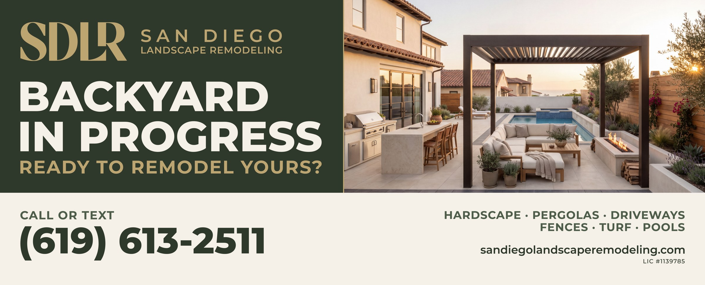

San Diego Landscape Remodeling · Fence banner · Version 5 · Final print files
The final banner, ready to print at 8 × 4 or 10 × 4 ft
The design you picked on November 21, exported in both sizes the printer offers. Order whichever fits the fence. Both files are fixed so a printer can't swap in the wrong font weight.


What changed
- A 10 × 4 ft size. The banner is only 4 ft tall either way, and the height is what limits the letter size. So the 10 ft version keeps the left side exactly as approved and spends the extra width on the photo. A wider photo means the turf strip along the bottom of the 8 ft version is cropped out; the patio, pergola, kitchen, fire pit, pool and fence all stay.
- A font fix in both files. In the first export, all four weights of the type were labelled "Montserrat Thin" inside the PDF. A shop that opens the file in Illustrator could have swapped in the hairline weight. The new files carry the right names (Medium, SemiBold, Bold, ExtraBold). The 8 ft banner prints pixel-for-pixel the same as before.
Which size?
| 8 × 4 ft | 10 × 4 ft | |
|---|---|---|
| Best when | The fence run is short, or it hangs between posts 8 ft apart. | The fence has the room. More photo makes it stand out more from a moving car. |
| Headline | 5.1 in capitals | 5.1 in capitals (same) |
| Phone | 4.4 in | 4.4 in (same) |
| Photo sharpness | About 224 dpi | About 149 dpi. Still sharp at banner distance; most banners print at 100 dpi or less. |
| PDF page | 97 × 49 in | 121 × 49 in |
Print spec
| File | PDF with 0.5 in of bleed on every side. Type and logo are vector with fonts embedded; the photo is embedded. |
| Material | Mesh vinyl (lets wind through on a fence), hemmed edges, grommets every 2 ft, zip-tied to the fence. |
| Colors | Forest #2E382B, sage #4E5D4A, gold #BDA572, paper #F5F1E8. Ask for a printed proof and check the greens don't go grey or the gold brassy. |
| Before it goes up | Get the homeowner's OK in writing: it is their fence. |
Download

The same files, plus 100 dpi PNGs and the generator, are in Drive under
02 Clients/san-diego-landscape-remodeling/assets/print-ready/fence-banner/print-files/v5-final-2026-11-22/.